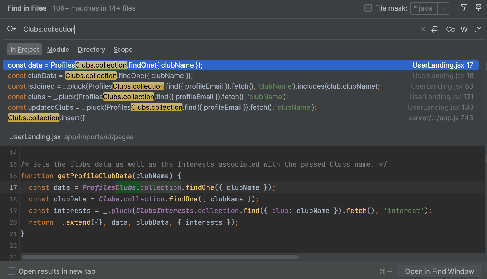

After experiencing sleepless nights of doing calculus problems, trying to wrap my head around Newton’s laws, and building circuits, I finally took my first software engineering course this semester. Transitioning from my internship as a software engineer intern to returning as a student, I was extremely excited to further develop and polish my skills by building on the knowledge and experience I acquired during the summer. Now that the semester is coming to an end, I can confidently say that the ICS 314 course might be the most enjoyable one I have ever taken in my college career. Through this course, I learned a variety of practical software engineering skills from learning a new programming language to experiencing team software development. Although every aspect of the course and concept I learned are equally valuable, I would like to highlight the concepts of Development Environments, Coding Standards, and User Interface Frameworks.
In ICS 314, we primarily used the IntelliJ Integrated Development Environment (IDE) after practicing Javascript and underscore functions in JSFiddle, a web-based IDE. An IDE is a software application where all code development occurs as it includes a test editor for writing code, a compiler to translate the code to a machine-readable language, debugging tools to identify errors, and a build tool to create the final executable program.
I have used multiple IDEs before taking this course, such as CLion, Android Studio, the Arduino IDE, Visual Studio Code, XCode, and even IntelliJ during my summer internship. Although IntelliJ has been my all-time favorite IDE, I have learned more shortcuts, tricks, and tips on how to use IntelliJ that make programming easier and faster. For example, one of my favorite shortcuts is Command + Shift + F, which allows me to search through all the files in the project using a keyword. Before learning about this, I always navigated to Edit > Find > Find in Files, which was extremely time-consuming. Another favorite shortcut is Command + B, which takes me to the declaration of the selected variable or function. This is extremely useful when I am looking at other people’s code or if I want to look at the file where the variable or function was declared. Below is an example of how I used Command + Shift + F to look for “Clubs.collection” in our final project, UHM Clubhouse.

Though IntelliJ is my favorite IDE to develop code in so far, I hope to explore other IDEs to learn more about their pros and cons to figure out which IDE is best for each task. IntelliJ has been an excellent IDE for all sorts of programming, but especially for web development— both for frontend and backend. There are additional features and tools I can use in IntelliJ, so I plan to dive deeper into using IntelliJ for other usages.
I have previously written a reflection on coding standards and mentioned that I believe in conforming to coding standards as it allows one to become an efficient and effective programmer. Now that I have experienced ESLint, a static code analysis tool for identifying problematic patterns, I am ready to give my final verdict.
Looking back, I view ESLint like a chiropractor for my bad coding habits. I have always been wanting to write cleaner code but did not know where or even how to start. Unlike improving penmanship, it’s very difficult to identify what a “good” coding style is, recognize your “bad” habits, and fix them. ESLint helps you conform to good coding standards by alerting you where you need to fix your code and adjusting them for you in the IntelliJ IDE, just like how a chiropractor would identify misalignment and adjust your spine to the correct form. In the beginning, I had countless red marks in my code, alerting me of mistakes and errors. But now that I learned what kinds of errors I tend to make while writing code, I can avoid them by writing clean, consistent code.
Looking back at my code, I have a much easier time reading and understanding my code because it is well-structured, clean, and consistent. Especially after experiencing team code development, I understand how crucial it is to write code that follows a certain standard because it makes code review and overall comprehension much easier, even if that code is not authored by you. I plan to continue conforming to the coding standards I learned in this class to improve readability and consistency in the work I produce.
Before this course, I believed in the superiority of back-end engineering. Back-end engineering consists of development that cannot be seen, such as server functions, databases, and security. On the other hand, front-end engineering is responsible for things the user can see and interact with, such as the layout, design, and interactive elements. Therefore, front-end engineers are responsible for the user interface (UI) development. Through this course, I learned HyperText Markup Language (HTML) and Cascading Style Sheets (CSS), along with Bootstrap 5 and React to gain experience in UI development.
As much as databases and security measures in software development hold significant value, UI is equally important as it is what the user interacts with. Without an aesthetically pleasing or intuitive UI, the application will not be an enjoyable experience for users. I also previously wrote a reflection on UI frameworks, but I still believe that UI development is a skill that requires practice and experience to excel in.
UI development using HTML and CSS can get extremely complicated and messy, especially since they are not the same in terms of structure and syntax in comparison to traditional programming languages such as Javascript or Python. In a sense, they are much more straightforward to understand and decipher, however. By using UI frameworks such as React, the tedious tasks of writing code in HTML and CSS are significantly reduced as most of the styling is already provided by the framework.
Especially after experiencing multiple web development with implementations of interactive components such as buttons, forms, and dropdowns, UI frameworks come in very handy. For example, in our group’s final project, I implemented a filter feature that allows users to filter the clubs shown on the club listing page by interest. I also implemented a search function that allows users to search for clubs by typing in a keyword. Both of these functionalities were implemented using React Bootstrap.
Although I cannot deny my love and passion for back-end engineering, I can confidently say that I have developed an interest in pursuing front-end engineering, specifically UI development through exploring and experiencing the possibilities provided by UI frameworks. I hope and plan to dive deeper into UI development using the knowledge and skills I acquired to integrate UI frameworks into my personal and academic projects in the future.
Overall, I enjoyed ICS 314 and I have to admit, I am a bit sad that it is over. I learned a lot of practical skills that I can envision being useful in my future career. Though the tasks and assignments were not always easy and there were rough patches throughout the semester, the skills and knowledge I have developed are irreplaceable. As I exit this course, I hope to continue exercising the concepts and skills I gained throughout this semester to become a successful software engineer.